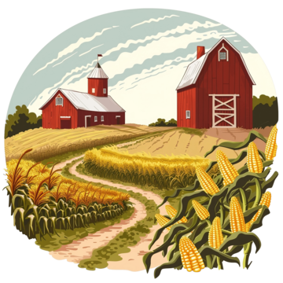

Inovação na Colheita: Tecnologia no Agronegócio

Tecnologia Avançada para uma Colheita Mais Eficiente!
No mundo do agronegócio, a tecnologia está revolucionando o processo de colheita. Conheça as inovações que estão moldando o futuro da agricultura:
- Máquinas Autônomas: Colheitadeiras com controle automatizado para maior precisão.
- Sensores e IoT: Monitoramento detalhado das condições do solo e da cultura.
- Análise de Dados: Uso de big data para prever rendimentos e otimizar processos.
- Drones: Voo sobre os campos para monitoramento e mapeamento eficientes.
Vantagens:
- Maior Produtividade: Colheita mais rápida e eficaz.
- Redução de Custos: Menos desperdício e maior economia de recursos.
- Sustentabilidade: Práticas mais verdes e eficientes.
Transforme sua colheita com as últimas tecnologias e maximize seu sucesso no campo!